豆瓣9.0，这绝对是一部良心纪录片。
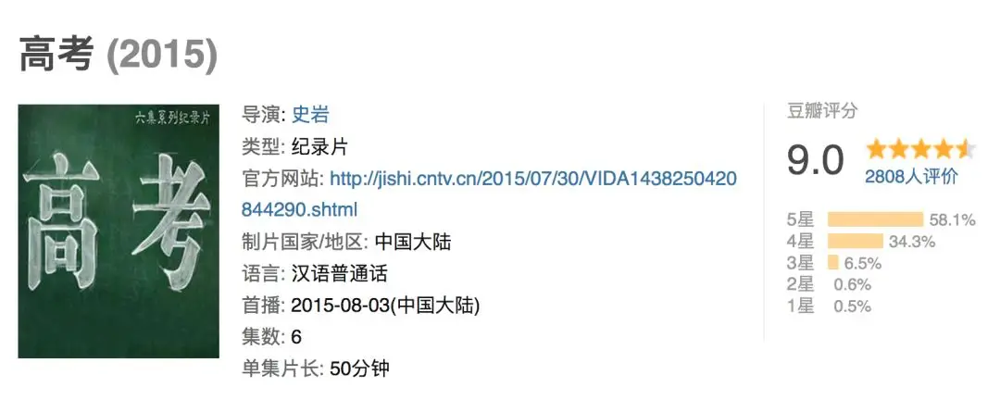
从山区到小镇再到北上广，从学生到家长再到老师，导演用六集纪录片深入地表现了高考的方方面面，每个人都能在其中找到共鸣和感动。
-01- 毛坦厂中学的日与夜
位于安徽省六安市大别山深处的毛坦厂中学因其连续多年的高本科达线率、校方极为严格的管理，和大量的陪读家长，在网上被称为“亚洲最大的高考工厂”。
前两集讲述的就是毛中的故事。
这个工厂里每年有2-3万人参加高考，其中三分之二的学生是复读生。
他们曾是高考的失败者，每个人的心里都承受着巨大的心理压力。
刚开学，老师便开始了动员：你们知道心电图如果一帆风顺将会怎样？
学生们异口同声的回答：那就会死。
接着老师告诉这些失败者：
是的，有起有伏才是真正的人生，你们也许曾经是失败者，但那只是一时的失败，只要你努力，只要你坚持到最后，你就一定会成功。
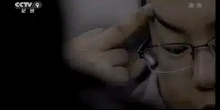
在这样的卧薪尝胆中，大部分学生很自觉，会很努力学习。
但是有些学生会比较调皮。
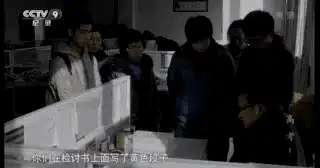
所以，班主任会狠抓纪律，向学生公布了三条红线：
不准上网
不准和女生接触过密、不准与社会闲散人员接触
不准躲在厕所里吸烟。
班主任还会不定时出现在教室的窗户上。
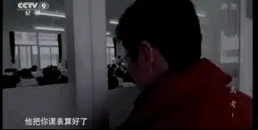
就算你根据老师的课表算准了时间，想要上课偷懒或者吃零食。
那也是痴心妄想，因为老师还可以调监控。
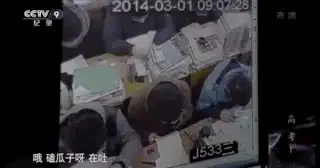
这样的环境下，每个人必须要拼命学习。
事实上，每个人心里也很清楚，高考是他们自己和整个家庭的希望。
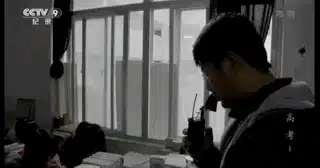
这些孩子大多来自附近的村庄或者小镇小县。
父母在社会里摸爬滚打吃尽苦头，他们明白文凭对于一个人将来的发展有多重要。
所以，高考也是这些家长的最大希望。
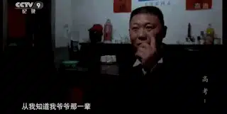
因此，毛坦厂每年聚集着近万名陪读的家长。
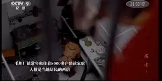
他们的主要责任就是做好孩子的后勤工作，帮孩子做饭、洗衣服。
有家长甚至为了孩子，停掉自己的厂子，来毛中当起了保安。
中午的时候，家长们会带着饭菜在学校门口等自己的孩子。
因为，孩子们出来吃饭的时间只有十分钟。
高考这场没有硝烟的战场里充满着压力和竞争。
模拟考试中，有个女孩因为成绩下降严重而失声痛哭。
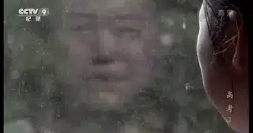
老师告诉女孩：
你要注意了，你没有发现吗，你现在是二本和三本之间的擦边球，如果你不注意，一不小心擦到了三本，那你毕业就是失业。
我们无法想象孩子听到这些话时的恐惧和压力。
而为了让女孩有良好的休息和学习环境，老师鼓励女孩的爸爸暂时放下自己的生意来陪读。
可是，一家人的开支都在这位劳苦的父亲身上，如果不去工作，小孩上学的钱都拿不出来。
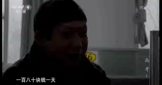
无奈之下，只有年迈的奶奶过来陪读。
有的学生因为家庭给的压力太大，学习难以安心，成绩从三百名滑落到三千名。
面对这样的情况，家人都被急哭了。
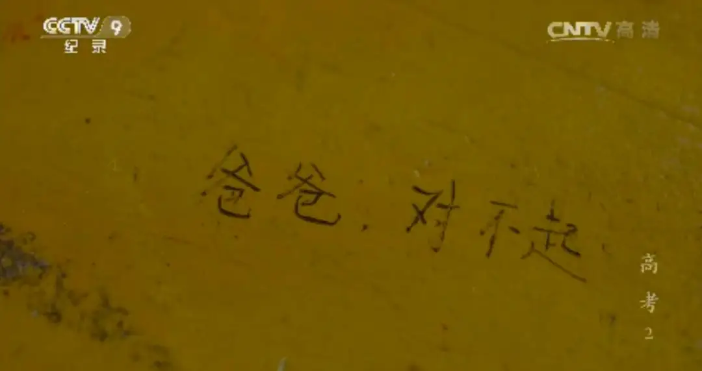
高强度、高压力的复习，让很多孩子身体不堪重负，病倒在床上。
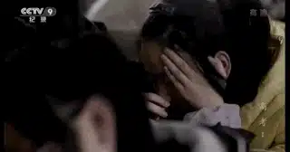
但是即使在挂水，他们仍然不放下书，抓紧时间复习功课。
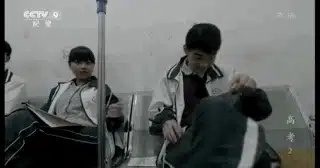
对于女生，为了防止生理期出现在高考那两天，学校还请了医生来指导学生。
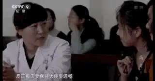
任何一个细节，任何一个地方，毛中都不会放过，为的就是孩子在高考上少犯一个错误，多考几分。
这样的毛中，让人又爱又恨。
社会上总是有人在讨论着毛中，有人说它没有人性，像机器一样泯灭了孩子的个性。
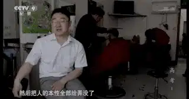
而更多的人，都支持这样的毛中。
毕竟，大家都知道毛中要求严格，但却争先恐后地把孩子送到这里。
他们需要毛中帮助孩子和自己实现大学梦。
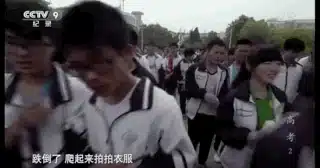
很快，高考来临。
孩子奔赴考场，人山人海的家长队伍为他们加油呐喊，仿佛孩子真的要上战场了。
家长们在考场外调侃说：我三年的辛苦，九个小时就搞定了！
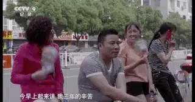
而最终的结果，也是有人欢喜有人忧。
那些孩子，那些家人看的真的很让人心疼！
-02- 久牵的孩子们
上海，每年有数万名农名工来这里打工。
他们的孩子很多是留守儿童，也有很多孩子跟着父母来到上海居住。
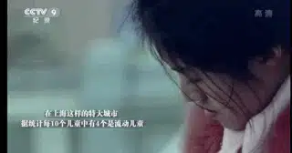
他们只能上条件很差的农名工学校。
2006年，当复旦研究生毕业的张轶超发现这些孩子时，他不禁感慨在这样的大都市里竟然有如此荒凉的地方。
所以他创建了久牵公益机构来帮助这些孩子。
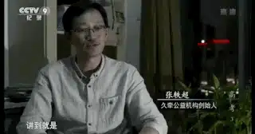
张轶超受《放牛班的春天》启发，给这群孩子起名为“放牛班的孩子”。
他教他们唱歌、帮助他们学习、陪伴他们成长.......
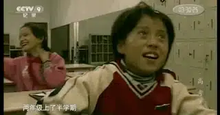
多年以后，放牛班的孩子已经长大，他们将面临残酷的选择。
因为没有办法参加上海的高考，他们有三条路可以选择：
申请出国。
回老家参加高考。
打工。
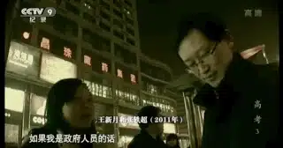
林兰兰是其中的幸运儿，她申请到了出国的机会，但又不得不面对高额的学费压力。
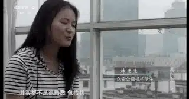
另一个女孩则不得不选择回老家参加高考。
因此她不仅要面临很多的不适应和挑战，同时也备受当地老师和学生的歧视。
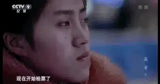
而最让她伤心的是，老家没有钢琴。
女孩很聪明，对音乐有着自己的理解和想法，但是生活没有给她继续专研的机会，她下定决心要考回上海。
第三个女孩则选择了打工，她当了质检员和面点学徒，但始终没有找到一个稳定的工作。
走在繁华的外滩上，女孩心酸地遥望着身边的一切：很多地方都在告诉我，我并不属于这里....
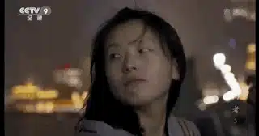
没有文凭，女孩在上海的工作和生活非常不顺利，她在痛苦和眼泪中怀疑自己是否选错了路......
-03- 走出大山
九千万贫困人口！
高考是他们唯一的希望，这个故事把我看哭了！
甘肃会宁县是国家级贫困县，洋洋是会宁一中的高三学生。
她的心里只有一个目标，那就是考上一所好的大学。
她是一个孤儿，母亲早逝，是奶奶一手把自己拉扯大的。
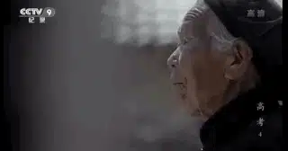
而奶奶最大的盼望就是自己能够考上一个好大学。
洋洋不断告诉自己，她必须要努力，考上了好大学，奶奶就会高兴，就能活更长的时间。
在这个贫困艰难的村子里，很多纯朴的老人对孩子如果没有这样的期望，也许他们早就离开这个世界了。
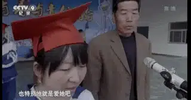
为此，洋洋心里承受着巨大的心理压力，高考几乎成为了她的一切。
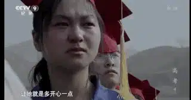
处于考验和艰难中的不仅仅是洋洋，还有她的叔叔。
叔叔视洋洋为己出，为了给洋洋提前准备学费，他吃尽了苦头。
一向不爱求别人的叔叔，只能低三下四向各个亲戚为洋洋筹钱。
但是每家每户也只能出个几百块，这与洋洋上大学的费用相差甚远。
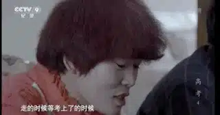
无奈之下，叔叔低价卖光了自己的羊。
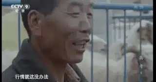
甚至，他最终不得不向银行贷款，只为了凑够洋洋上学的一万五千元。
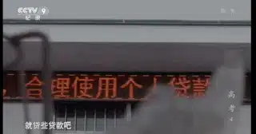
而洋洋一家只是众多贫困家庭的一个缩影。
很多家庭都是因教返贫，穷尽一家之力、四处借贷才能供起一个孩子读书。
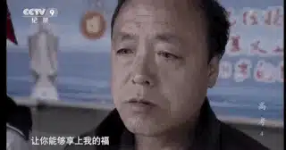
洋洋的班主任也是其中的一个，十几年前，哥哥学习成绩很优异，但为了让他上学，哥哥只能放弃学业外出打工。
大学毕业后的他，心里一直对哥哥有愧。
所以，他回到了会宁，用自己的一生去帮助那些处于艰难和迷茫中的孩子。
每次高考临近，他总是很心疼自己的学生，因为越是临近高考，孩子们心里就越紧张，总是闷着头死学、苦学。
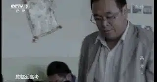
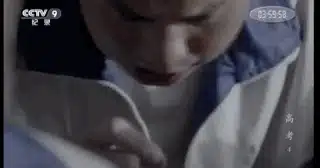
班主任用心陪伴着这些学生，他知道帮助一个孩子就是帮助一个家庭。
最终，功夫不负有心人，洋洋虽然发挥的不是很好，但是上了陕西师范大学。
而洋洋选择师范类的学校，很大原因是因为师范类学校学费有补贴政策。
这是多么懂事的女孩！
自己也终于圆了奶奶的梦想，上大学前，洋洋和奶奶约定，放假后回来看奶奶。
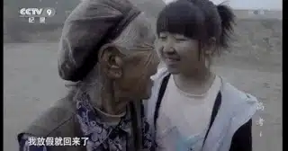
可是，这个约定将永远无法实现，洋洋考上大学后的两个月，奶奶病逝.....
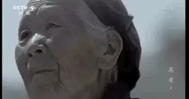
-04- 留学大潮下
这一集，纪录片将镜头转向北京的留学大军。
每一年，有几十万的学生放弃中国高考，选择海外留学。
刘云昊便是其中之一，她的父母是通讯计算机的博士，在父母的悉心培养下。
她小学五年级就背完了托福单词，现在会说英语、法语和西班牙语。
她的目标就是进入耶鲁大学。
而耶鲁每年在中国也只录取十几个孩子，竞争非常残酷。
........
接着导演将镜头从刘云昊转到了整个留学生的群体和家庭里。
这些孩子家境殷实，从小就在国际学校读书。
但是，这样的环境下，早恋、纹身、自由散漫也让家人操碎了心。
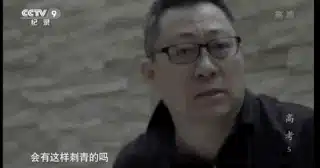
而更令人无奈的是，中文在国际学校里成为了边角余料，老师讲的激情澎湃，学生不但没有一点反应，还以为老师嗑药了。
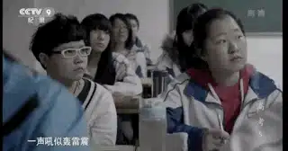
无奈的老师向另一个同事发牢骚：
你深夜里振臂一呼，没有一个人回声，像是在沙漠里....
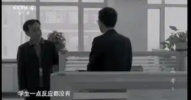
因此，很多学生将语文课看为是复习课，更有学生一声不吭直接走人。
而当这些孩子出国后，中西方文化、价值观的差异才让他们切实地感受到压力和痛苦。
即使自己上了很好的大学，找工作也非常不顺利，很多学生怀疑，父母在自己身上花的这150万到底值不值！
.......
-05- 校长的选择
这一集，镜头对准了怀抱教育梦想的校长。
他们想要真正的改变中国的教育现状，也在身体例行地进行教育创新。
曾经缔造衡水中学的校长接手了一所即将倒闭的民办高中，这所学校都是别人不要的学生，打架斗殴、早恋生孩子的现象都有。
一位班主任曾苦口婆心劝说一个女生要好好学习。
没想到，女孩非常无所谓地告诉他：大不了当小姐去。
老师当场哑口无言，最终只能无奈地告诉她：那也要有个文凭，当个高级小姐吧。
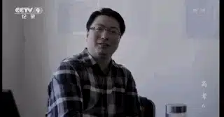
就是这样的环境，校长接手后，首先花大力气请走了很多不愿意学习的孩子，接着通过集体、口号以及纪律来培养一种学习上的激情。
学校的升学率直线上升。
广州一所学校的校长则推行走学制，主要针对那些不喜欢学习的同学。
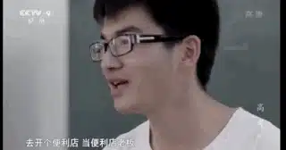
校长带领这些学生走入不同的地方来让他们建立兴趣，启发他们的思考。
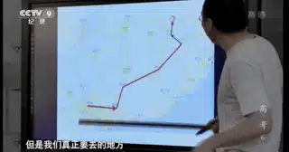
而北大附中则走的更远，校长想要推进真正的素质教育。
因此他们建立了学长团，带领刚入学的学生如何进行主动学习。
高一高二的学生还可以自由选择自己喜欢的老师和课程。
最后，北大附中甚至取消了高三班的班主任制度，取而代之的是导师制。
这些都旨在激发学生兴趣并最大程度地培养学生的自主学习能力。
可是这都受到学生家长和社会的挑战和怀疑，因为他们只看重升学率。
有些家长甚至攻击校长拿自己的孩子当实验品。
中国的高考改革之路究竟走向何方.......
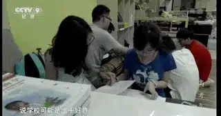
这部纪录片用朴实的镜头较为完整地记录了高考的各个层面。
带着“镣铐”起舞的学生、老师和家长都是我们最应该尊重和祝福的对象。
他们真的不容易！
在高考这艘航空母舰里，我们既是受益者，也是受害者。
高考告诉我们成长就意味着自己一个人去面对未来和挑战。
但是这也容易蒙蔽我们的眼睛，会让我们将一切都定睛在自己的能力上，眼界也只能停留在自己可以掌控的世界里。
考好了，我们心气会很高、很骄傲，考不好，则会走向骄傲的另一面自卑，而这都让我们难以走向信靠和谦卑。
很多从大山里闯上来的孩子，他们坚强，但异常敏感，他们看上去随和，但经常活在自己的世界里。
我曾经也是这样的人，当我考入大学的时候，我坚信是自己的努力改变了我的命运。
在大学里，我经常不敢和别人交流，尤其是碰到那些来自于大城市和家庭比较富裕的孩子。
但是，慢慢的，我发现，其实我是处于一种自我封闭的骄傲里，因为我从不想麻烦别人，从不想有求于人，我害怕在碰撞中看到自己不如别人。
我一直想要做一个自给自足的“神”。
这种从艰苦和竞争激烈的高考而来的自我膨胀让我走向了极端。
现在回过头来，我能考入一所好大学，是有亲戚愿意接纳我到他那读书，是有老师和同学一直在关心我，是有爷爷奶奶拿出了养老钱，是我拥有健康的身体.......
可是，为什么我会拥有这一切呢？我配拥有这些么？
是因为我很强么，我心里很清楚我并不强。
是因为我很可爱么，我邋遢起来的像只小强。
这一切的一切，我在一段回忆里找到了答案。
小时候，我跟着奶奶到教会，我总是会睡觉，所以很多东西都忘记了。
但是有一个画面我记得非常清楚，那就是奶奶为我不断流泪祷告：没娘的孩子天照顾，这个孩子我交在你的手里，你带领他的将来.....
原来，我走过稚嫩，进入坚强；走出骄傲，进入迷茫；离开自我，迈向真理.....这一切都在奶奶的祷告和上帝的保守中。
这就是信靠的力量，我们也需要为那些正在经历高考的学生和家庭守望。
关注并回复：高考
获取电影资源
相关推荐：
奥斯卡影帝，你把自己演死了
73年过去了，纳粹离我们有多远？
这是一部无神论永远都看不懂的获奖电影！
别人拍出了我们未曾拥有的高考电影
这里没有挑逗你眼目情欲的小鲜肉
也没有挑动你肉体情欲的段子
更没有膨胀你今生骄傲的鸡血
我们只在乎那些最质朴真诚的作品
在那里我们才能恢复真正的想象力
我们也坚信这才是我们真正需要的

ID:Six_hundred_hits
长按二维码，一键关注
【六百击】
-END-
电影评论
尽情分享朋友圈

苹果打赏
通道
小提示：文末广告是腾讯配送广告，内容与本号无关，但您的每次点击（无需反复点）都会给平台带来几毛收益，欢迎您点击支持六百击。